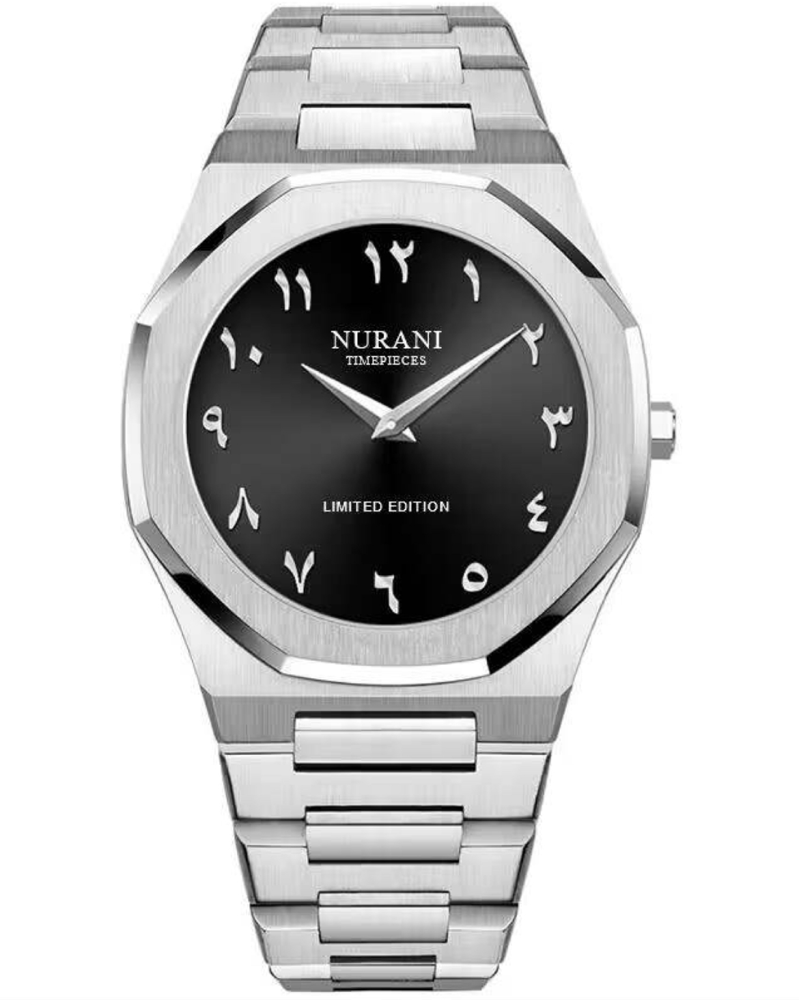

Con sus diseños sofisticados y detalles exquisitos, los Nurani Timepipeces son una declaración de estilo. Ya sea en una reunión de negocios o en una cena elegante, este reloj será el complemento perfecto para tu outfit


- Materiales de primera calidad Desde acero inoxidable hasta cuero genuino, utiliza solo los mejores materiales para asegurar la calidad y la longevidad de nuestros relojes.
- Diseños exclusivos Diseñados con atención al detalle, ofreciendo una combinación única de estilo y funcionalidad que lo distingue de la competencia.
- Movimiento suizo de precisión Equipados con movimientos suizos de alta calidad, garantizando la precisión y la durabilidad.